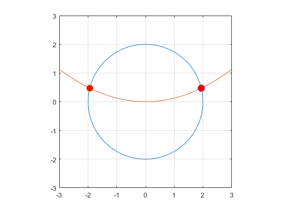
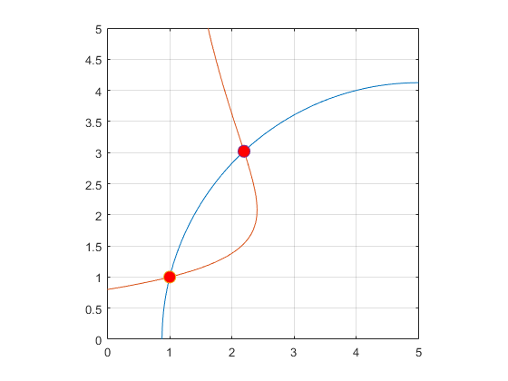
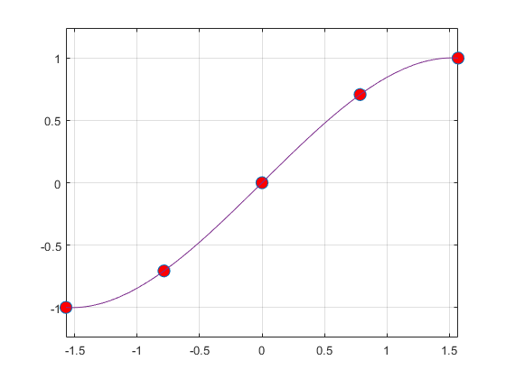
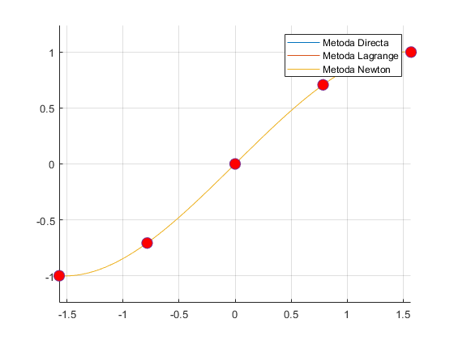
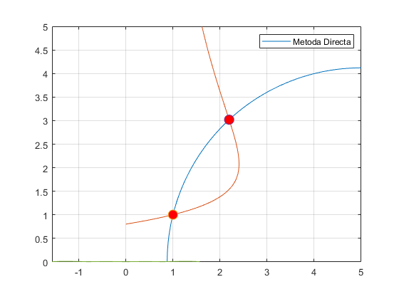
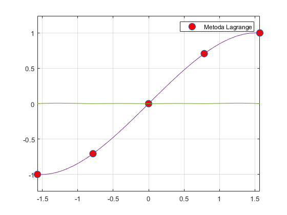
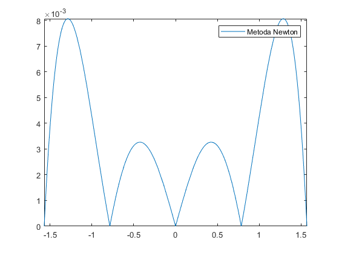

Contents
ex 1
Jacobianul sistemului
syms x y; f1=x.^2+y.^2-4; f2=(x.^2)/8-y; Js=[diff(f1,x) diff(f1,y); diff(f2,x) diff(f2,y)]; Js=matlabFunction(Js,'vars',{x,y}); Js(x,y) Jf=jacobian([f1; f2],[x, y]) % % Reprezentarea celor 2 curbe f1=@(x,y)x.^2+y.^2-4; fimplicit(f1,[-3,3,-3,3]) grid on hold on axis equal f2=@(x,y)(x.^2)/8-y; fimplicit(f2,[-3,3,-3,3]); % Determinarea punctelor de intersectie cu ajutorul metodei Newton F=@(x,y)[x.^2+y.^2-4;x.^2/8-y] x0=[-2;0]; eps=10^(-6); [r1,N1]=MetNewton(F,Js,x0,eps) x0=[2;0]; [r2,N2]=MetNewton(F,Js,x0,eps) % Reprezentarea punctelor de intersectie pe graficul curbelor plot(r1(1),r1(2),'o','MarkerFaceColor','r','Markersize',10); plot(r2(1),r2(2),'o','MarkerFaceColor','r','Markersize',10);
ans =
[ 2*x, 2*y]
[ x/4, -1]
Jf =
[ 2*x, 2*y]
[ x/4, -1]
F =
function_handle with value:
@(x,y)[x.^2+y.^2-4;x.^2/8-y]
r1 =
-1.9435
0.4721
N1 =
4
r2 =
1.9435
0.4721
N2 =
4
 ex 2
Jacobianul sistemului
figure(2) syms x1 x2; f1=x1.^2-10*x1+x2.^2+8; f2=x1.*(x2.^2)+x1-10*x2+8; Js=[diff(f1,x1) diff(f1,x2); diff(f2,x1) diff(f2,x2)]; Js=matlabFunction(Js,'vars',{x1,x2}); Js(x1,x2) Jf=jacobian([f1;f2],[x1,x2]) % Reprezentarea celor 2 curbe f1=@(x1,x2)x1.^2-10*x1+x2.^2+8; fimplicit(f1,[0,5,0,5]); grid on hold on axis equal f2=@(x1,x2)x1.*(x2.^2)+x1-10*x2+8; fimplicit(f2,[0,5,0,5]); % Determinarea punctelor de intersectie cu ajutorul metodei Newton F=@(x1,x2)[x1.^2-10*x1+x2.^2+8;x1.*(x2.^2)+x1-10*x2+8] x0=[1;1]; eps=10^(-6); [r1,N1]=MetNewton(F,Js,x0,eps) x0=[3;3]; [r2,N2]=MetNewton(F,Js,x0,eps) % Reprezentarea punctelor de intersectie pe graficul curbelor plot(r1(1),r1(2),'o','MarkerFaceColor','r','Markersize',10); plot(r2(1),r2(2),'o','MarkerFaceColor','r','Markersize',10);
ans =
[ 2*x1 - 10, 2*x2]
[ x2^2 + 1, 2*x1*x2 - 10]
Jf =
[ 2*x1 - 10, 2*x2]
[ x2^2 + 1, 2*x1*x2 - 10]
F =
function_handle with value:
@(x1,x2)[x1.^2-10*x1+x2.^2+8;x1.*(x2.^2)+x1-10*x2+8]
r1 =
1
1
N1 =
1
r2 =
2.1934
3.0205
N2 =
4
 ex 3
figure(3) f = @(x)sin(x); X=linspace(-pi/2,pi/2,5); Y=f(X); fplot(f,[-pi/2,pi/2]); plot(X,Y,'o','MarkerFaceColor','r','Markersize',10); grid on hold on axis equal % Metoda directa disp ('Aplicand metoda directa obtinem polinomul'); syms x; y=MetDirecta2(X,Y,x) disp 'Eroarea |Pn(pi/6) - f(pi/6)|=' abs(MetDirecta2(X,Y,pi/6) - f(pi/6)) fplot(y,[-pi/2,pi/2]); % Metoda Lagrange disp ('Aplicand metoda Lagrange obtinem polinomul'); y=MetLagrange(X,Y,x) disp 'Eroarea |Pn(pi/6) - f(pi/6)|=' abs(MetLagrange(X,Y,pi/6) - f(pi/6)) fplot(y,[-pi/2,pi/2]); % Metoda Newton hold on disp ('Aplicand metoda Newton obtinem polinomul'); y=MetNew(X,Y,x) disp 'Eroarea |Pn(pi/6) - f(pi/6)|=' abs(MetNew(X,Y,pi/6) - f(pi/6)) fplot(y,[-pi/2,pi/2]);
Aplicand metoda directa obtinem polinomul
y =
(8901050889487701*x)/9007199254740992 - (5133968287386267*x^3)/36028797018963968 - 299706632090081/5070602400912917605986812821504
Eroarea |Pn(pi/6) - f(pi/6)|=
ans =
0.0030
Aplicand metoda Lagrange obtinem polinomul
y =
(562949953421312*x*(x + pi/2)*(x - pi/4)*(x + pi/4))/5140916555662875 - (562949953421312*x*(x - pi/2)*(x - pi/4)*(x + pi/4))/5140916555662875 + (1125899906842624*2^(1/2)*x*(x - pi/2)*(x + pi/2)*(x - pi/4))/5140916555662875 - (1125899906842624*2^(1/2)*x*(x - pi/2)*(x + pi/2)*(x + pi/4))/5140916555662875
Eroarea |Pn(pi/6) - f(pi/6)|=
ans =
0.0030
Aplicand metoda Newton obtinem polinomul
y =
(3358993826523877*x)/9007199254740992 + ((3024156947890437*x)/9007199254740992 + 2375167312698781/4503599627370496)*(x + pi/4) - x*(x + pi/4)*((5133968287386267*x)/36028797018963968 + 1008052315963479/4503599627370496) - 1865452045155275/4503599627370496
Eroarea |Pn(pi/6) - f(pi/6)|=
ans =
0.0030
 ex 4
figure(4) f = @(x)sin(x); n=5; X=linspace(-pi/2,pi/2,n); Y=f(X); grid on hold on axis equal % Metoda directa disp ('Aplicand metoda directa obtinem polinomul'); syms x; y=MetDirecta2(X,Y,x) plot(linspace(-pi/2,pi/2,100), MetDirecta2(X,Y,linspace(-pi/2,pi/2,100))); % Metoda Lagrange disp ('Aplicand metoda Lagrange obtinem polinomul'); syms x; y=MetLagrange(X,Y,x) plot(linspace(-pi/2,pi/2,100), MetLagrange(X,Y,linspace(-pi/2,pi/2,100))); %%Metoda Newton syms x; disp ('Aplicand metoda Newton obtinem polinomul'); y=MetNew(X,Y,x) plot(linspace(-pi/2,pi/2,100), MetNew(X,Y,linspace(-pi/2,pi/2,100))); plot(X,Y,'o','MarkerFaceColor','r','Markersize',10); % fplot(f,[-pi/2,pi/2]); legend('Metoda Directa', 'Metoda Lagrange', 'Metoda Newton'); hold off
Aplicand metoda directa obtinem polinomul y = (8901050889487701*x)/9007199254740992 - (5133968287386267*x^3)/36028797018963968 - 299706632090081/5070602400912917605986812821504 Aplicand metoda Lagrange obtinem polinomul y = (562949953421312*x*(x + pi/2)*(x - pi/4)*(x + pi/4))/5140916555662875 - (562949953421312*x*(x - pi/2)*(x - pi/4)*(x + pi/4))/5140916555662875 + (1125899906842624*2^(1/2)*x*(x - pi/2)*(x + pi/2)*(x - pi/4))/5140916555662875 - (1125899906842624*2^(1/2)*x*(x - pi/2)*(x + pi/2)*(x + pi/4))/5140916555662875 Aplicand metoda Newton obtinem polinomul y = (3358993826523877*x)/9007199254740992 + ((3024156947890437*x)/9007199254740992 + 2375167312698781/4503599627370496)*(x + pi/4) - x*(x + pi/4)*((5133968287386267*x)/36028797018963968 + 1008052315963479/4503599627370496) - 1865452045155275/4503599627370496
Reprezentare eroare E=|f-Pn|
disp('Reprezentare eroare E=|f-Pn|'); figure(2) E1=abs(f(x)-MetDirecta2(X,Y,x)) fplot(E1,[-pi/2,pi/2]); legend('Metoda Directa'); figure(3) E2=abs(f(x)-MetLagrange(X,Y,x)) fplot(E2,[-pi/2,pi/2]); legend('Metoda Lagrange'); figure(4) E3=abs(f(x)-MetNew(X,Y,x)) fplot(E3,[-pi/2,pi/2]); legend('Metoda Newton');
Reprezentare eroare E=|f-Pn| E1 = abs(sin(x) - (8901050889487701*x)/9007199254740992 + (5133968287386267*x^3)/36028797018963968 + 299706632090081/5070602400912917605986812821504) E2 = abs(sin(x) + (562949953421312*x*(x - pi/2)*(x - pi/4)*(x + pi/4))/5140916555662875 - (562949953421312*x*(x + pi/2)*(x - pi/4)*(x + pi/4))/5140916555662875 - (1125899906842624*2^(1/2)*x*(x - pi/2)*(x + pi/2)*(x - pi/4))/5140916555662875 + (1125899906842624*2^(1/2)*x*(x - pi/2)*(x + pi/2)*(x + pi/4))/5140916555662875) E3 = abs(sin(x) - (3358993826523877*x)/9007199254740992 - ((3024156947890437*x)/9007199254740992 + 2375167312698781/4503599627370496)*(x + pi/4) + x*(x + pi/4)*((5133968287386267*x)/36028797018963968 + 1008052315963479/4503599627370496) + 1865452045155275/4503599627370496)  
disp ('Cu cat crestem gradul polinomului apar mai multe variatii ale graficului') disp ('Incepand cu n=64 polinomul isi pierde caracterul')
Cu cat crestem gradul polinomului apar mai multe variatii ale graficului Incepand cu n=64 polinomul isi pierde caracterul